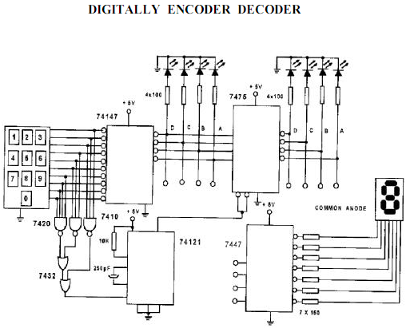
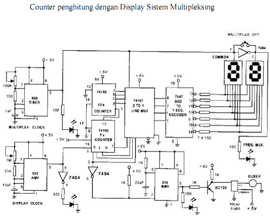
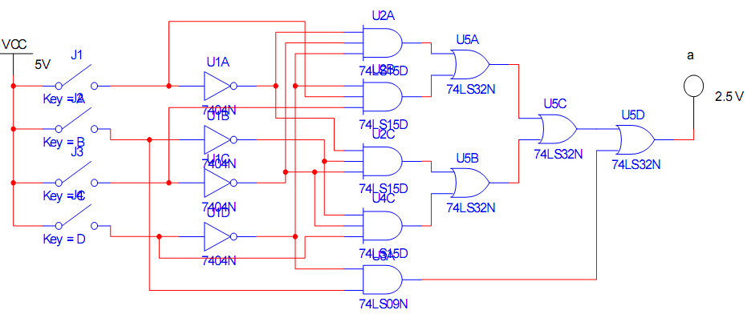
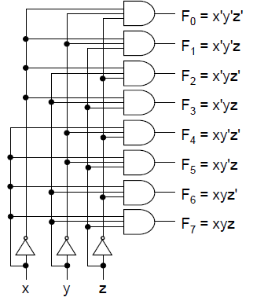
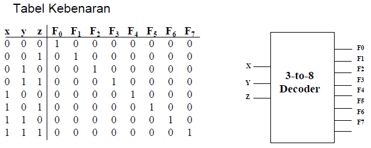

Pengaplikasian Seven Segment Display
Seven segment display merupakan salah satu penampil yang sering dijumpai pada perangkat elektronik. Bentuknya sederhana, tetapi cara kerjanya berkaitan langsung dengan encoder, decoder, kode BCD, dan logika digital. Artikel ini membahas hubungan bagian-bagian tersebut serta contoh pemakaiannya dalam sebuah rangkaian.
Pengertian Seven Segment
Sebuah seven segment terdiri atas tujuh LED yang disusun menyerupai angka delapan. Setiap LED mempunyai nama a sampai g. Angka dibentuk dengan menyalakan kombinasi tertentu. Misalnya, angka 1 menyalakan segmen b dan c, sedangkan angka 8 menyalakan seluruh segmen.
Selain tujuh segmen utama, beberapa display menyediakan LED tambahan untuk titik desimal atau DP. Dalam praktiknya, display perlu diberi resistor pembatas arus agar LED dan IC penggerak tetap aman.
Perbedaan jenis display: pada common anode, anoda semua LED disatukan ke VCC sehingga segmen aktif ketika diberi LOW. Pada common cathode, katoda semua LED disatukan ke GND sehingga segmen aktif ketika diberi HIGH. IC 74LS47 digunakan untuk menggerakkan display common anode dengan keluaran active-low.[1]
| Jenis | Pin bersama | Segmen menyala ketika | Contoh driver |
|---|---|---|---|
| Common anode | Anoda ke VCC | Input segmen LOW | 7447 / 74LS47 |
| Common cathode | Katoda ke GND | Input segmen HIGH | 7448 / driver active-high |
Bagaimana Encoder dan Decoder Bekerja?
Encoder dan decoder mempunyai arah kerja yang berbeda. Encoder mengurangi banyak jalur input menjadi beberapa bit kode. Decoder menerima bit kode tersebut lalu mengaktifkan keluaran yang sesuai. Pada sistem keypad seven segment, prosesnya dapat dijelaskan seperti ini:
- Tombol angka pada keypad memberikan salah satu dari sepuluh input desimal.
- IC 74147 berfungsi sebagai encoder dan menghasilkan kode BCD 4-bit.
- Latch 7475 dapat menyimpan kode agar nilai tidak berubah ketika tombol dilepas.
- IC 7447 menerjemahkan empat bit BCD menjadi sinyal untuk segmen
asampaig. - Display menyalakan segmen yang diperlukan untuk membentuk angka.

Contoh Pengaplikasian pada Rangkaian
Counter dua digit
Seven segment dapat digunakan sebagai output counter. Pada contoh berikut, dua IC 74192 menghitung satuan dan puluhan. IC 74157 bertugas memilih salah satu data BCD sebelum data dikirim ke decoder 7447. Timer 555 mengatur pergantian digit secara cepat. Cara ini disebut multiplexing.

Rangkaian logika untuk segmen a
Fungsi decoder juga dapat dirancang menggunakan gerbang logika. Contoh berikut memperlihatkan rangkaian untuk satu keluaran, yaitu segmen a. Inverter 7404 membentuk sinyal komplemen, kemudian gerbang AND dan OR menggabungkan kondisi input yang diperlukan.



Video Pembuatan
Untuk melihat contoh perakitan secara langsung, video berikut menunjukkan penggunaan IC decoder 74LS47 dengan display seven segment. Hal yang perlu diperhatikan adalah posisi pin, resistor seri, hubungan catu daya, serta kombinasi input BCD.
Sumber video: Merakit Seven Segment Display Dengan IC Decoder 74LS47.
Urutan perakitan dasar
- Siapkan IC 74LS47, display common anode, breadboard, kabel jumper, sumber 5 V, dan tujuh resistor.
- Pasang catu daya IC: pin 16 ke VCC dan pin 8 ke GND.
- Set pin
LT,BI/RBO, danRBIpada kondisi HIGH agar display bekerja normal. - Hubungkan output
asampaigmelalui resistor ke kaki segmen yang sesuai. Gunakan datasheet untuk memastikan pin IC yang digunakan.[1] - Hubungkan common anode display ke VCC.
- Uji input BCD dari 0000 sampai 1001. Hasilnya harus menampilkan angka 0 sampai 9.
Tabel Kebenaran BCD ke Seven Segment
Untuk konfigurasi common anode dan IC 74LS47, angka 0 pada keluaran berarti segmen menyala, sedangkan angka 1 berarti segmen mati.[1]
| Angka | BCD D C B A | a | b | c | d | e | f | g | Segmen menyala |
|---|---|---|---|---|---|---|---|---|---|
| 0 | 0000 | 0 | 0 | 0 | 0 | 0 | 0 | 1 | a b c d e f |
| 1 | 0001 | 1 | 0 | 0 | 1 | 1 | 1 | 1 | b c |
| 2 | 0010 | 0 | 0 | 1 | 0 | 0 | 1 | 0 | a b d e g |
| 3 | 0011 | 0 | 0 | 0 | 0 | 1 | 1 | 0 | a b c d g |
| 4 | 0100 | 1 | 0 | 0 | 1 | 1 | 0 | 0 | b c f g |
| 5 | 0101 | 0 | 1 | 0 | 0 | 1 | 0 | 0 | a c d f g |
| 6 | 0110 | 0 | 1 | 0 | 0 | 0 | 0 | 0 | a c d e f g |
| 7 | 0111 | 0 | 0 | 0 | 1 | 1 | 1 | 1 | a b c |
| 8 | 1000 | 0 | 0 | 0 | 0 | 0 | 0 | 0 | a b c d e f g |
| 9 | 1001 | 0 | 0 | 0 | 0 | 1 | 0 | 0 | a b c d f g |
Contoh Penggunaan
- Jam digital, timer, dan stopwatch.
- Display nomor antrean di bank, klinik, dan rumah sakit.
- Multimeter digital, timbangan, serta alat ukur lainnya.
- Counter jumlah barang dan papan skor pertandingan.
- Panel angka pada peralatan rumah tangga dan perangkat industri.
Daftar Referensi
- Texas Instruments. SN74LS47 BCD-to-Seven-Segment Decoders/Drivers. https://www.ti.com/product/SN74LS47
- YouTube. Merakit Seven Segment Display Dengan IC Decoder 74LS47. https://www.youtube.com/watch?v=IGU9p3o7pCU
- Kingbright. Through-Hole 7-Segment Display Catalog. Katalog display
- King Fahd University of Petroleum & Minerals. Seven-Segment Display Decoder, Experiment 006. Dokumen praktikum
- Tim Dosen STT-PLN. ENCODER DAN DECODER. Materi PPT terlampir.